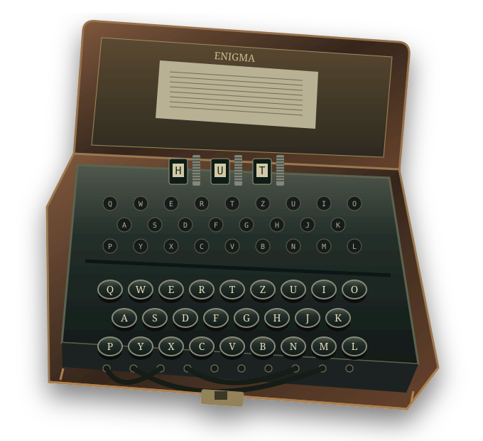
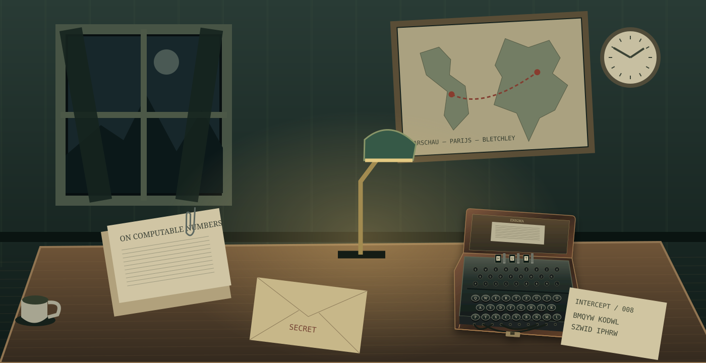

BLETCHLEY PARK · NAJAAR 1940
De nacht heeft
een geheim.
Een radio kraakt. Iemand schuift een vel papier over je bureau. Negenentwintig letters. Geen enkel woord.
Hoe kon Alan Turing bijdragen aan het verslaan van nazi-Duitsland, terwijl hij na de oorlog door zijn eigen land werd vervolgd?
Neem plaats aan het bureau →
Educatieve enscenering · fictief oefentelegram01 — DE WERKRUIMTE
Kijk goed.
Alles vertelt iets.
In Bletchley Park werden onderschepte berichten onderzocht. Wiskundigen, operators en administratieve medewerkers waren van elkaar afhankelijk.
Verken de vijf voorwerpen. Elk opent een historisch dossier. De kamer is een vrije illustratie, geen reconstructie van één specifieke hut.

0 van 5 onderzoeken vastgelegd
02 — VOOR EN NA DEZE NACHT
Een code heeft
een voorgeschiedenis.
De klok in de kamer staat op 1940. Deze tijdlijn kijkt ook terug én vooruit. Kies een jaar en volg het spoor van kennis, geheimhouding en erkenning.
03 — DE LAATSTE TRANSMISSIE
Nu is het
aan jullie.
Leg jullie voorlopige antwoord op de centrale vraag op tafel. Gebruik daarna de vijf sleutelkaarten uit de fysieke box om het oefentelegram te lezen met Mininigma op de tablet.
OVERDRACHT AAN DE OPERATOR
De sleutel ligt hier.
De machine staat klaar.
Open Mininigma op de tablet. Houd de sleutelkaarten en het telegram naast het apparaat. Een groepslid stelt in, een ander leest de kaarten en controleert.
- Kies in Mininigma een model met drie rotoren en stekkerbord: Enigma I of M3. Gebruik de gewone reflector C, niet een dunne M4-reflector.
- Neem de vijf sleutelstroken over, steeds van links naar rechts. Ringstand en startpositie zijn niet hetzelfde.
- Verbind alle tien stekkerparen. Voer daarna het telegram in; spaties zijn niet nodig. Herstel vóór een nieuwe poging steeds de beginstand.
- Lees de uitkomst en keer terug naar deze kamer.
Start de al geïnstalleerde app zelf op je tablet. Deze link opent de appinformatie en start geen machine. De website rekent het telegram niet voor je uit.
Liever in de browser? Open de geteste M3 met stekkerbord ↗
Cryptii: kies Model Enigma M3 en gebruik de velden Position, Ring en Plugboard. Neem de instellingen zelf over uit de fysieke kaarten.
De Engelse instellingen herkennen
- Left / Middle / Right rotor
- Linker / middelste / rechter rotor
- Ring settings
- Ringstand
- Start position
- Startpositie
- Reflector
- Reflector
- Plugboard pairs
- Stekkerparen
- Input / Output
- Invoer / uitkomst